We provide professional fiber optic installation in Nairobi and across Kenya, delivering high-speed, secure, and scalable connectivity solutions for businesses and institutions.
Our services integrate with structured cabling, CCTV systems, and access control systems.
🚀 Request Fiber Installation QuoteWe are a leading provider of fiber optic installation in Kenya offering complete solutions including:
Our fiber systems integrate seamlessly with:
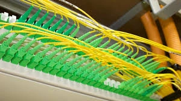
We provide professional fiber optic installation services for enterprises, ISPs, campuses, and commercial buildings.
Our team handles both backbone and last-mile deployments with precision and efficiency.
We use high-quality cables and industry-approved installation techniques.
From trenching and ducting to aerial installations, we cover all environments.
We ensure proper routing, protection, and long-term durability of fiber infrastructure.
Our solutions support high-speed data, voice, and video transmission.
We also provide site surveys, planning, and design before deployment.
Our installations comply with international fiber standards and safety regulations.
We guarantee minimal downtime and disruption during installation.
Every project is tested and certified before handover.
Ideal for telecom operators, businesses, and smart infrastructure projects.
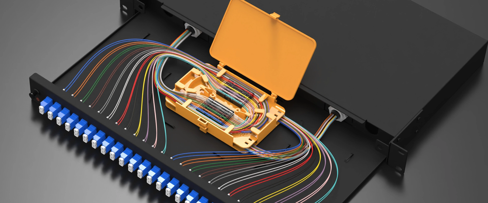
We offer high-precision fiber splicing and termination services.
Our technicians use advanced fusion splicing equipment for optimal performance.
We ensure low signal loss and strong, reliable fiber connections.
Both single-mode and multi-mode fibers are expertly handled.
We also provide fiber termination for patch panels and distribution frames.
All splicing work is carefully tested and documented.
We maintain proper cable management and labeling standards.
Our team ensures minimal attenuation and high network reliability.
We support new installations, upgrades, and repairs.
Fast turnaround time for urgent network restoration needs.
Perfect for ISPs, enterprises, and data centers.
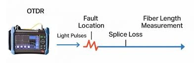
We provide comprehensive fiber optic testing and certification services.
Using OTDR and power meter tools, we analyze fiber performance.
We detect faults, breaks, bends, and signal losses accurately.
Detailed reports are generated for each fiber link tested.
Our testing ensures network reliability and compliance with standards.
We help troubleshoot existing fiber network issues quickly.
Pre-commissioning and post-installation testing available.
We verify signal strength, attenuation, and continuity.
Ideal for quality assurance and performance optimization.
Our services reduce downtime and improve network efficiency.
Trusted by telecom providers and enterprise clients.
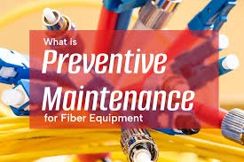
We offer ongoing maintenance services for fiber optic networks.
Our team ensures your network remains stable and high-performing.
We provide routine inspections and preventive maintenance.
Fault detection and quick repairs minimize downtime.
We handle cable damage, connector issues, and signal degradation.
Emergency support is available for critical network failures.
We maintain proper documentation and network records.
Our maintenance plans are customized to your needs.
We improve network lifespan and operational efficiency.
Cost-effective solutions for long-term reliability.
Ideal for businesses, ISPs, and infrastructure providers.
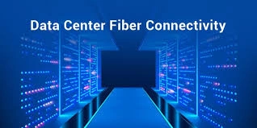
We design and deploy high-performance fiber systems for data centers.
Our solutions support high bandwidth and low latency requirements.
Structured cabling ensures scalability and easy management.
We implement fiber backbone and inter-rack connectivity.
High-density patching solutions are provided for efficiency.
We follow best practices for cable routing and airflow optimization.
Our designs enhance reliability and redundancy.
We support cloud, enterprise, and colocation environments.
Fiber solutions are optimized for mission-critical operations.
We ensure compliance with international data center standards.
Reliable and future-ready infrastructure guaranteed.
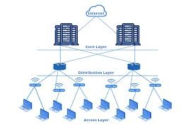
We provide expert fiber network design and consulting services.
Our team analyzes your needs and creates scalable network solutions.
We design efficient layouts for maximum performance and coverage.
Route planning and cost optimization are key priorities.
We ensure proper selection of fiber types and components.
Our designs support future expansion and technology upgrades.
We assist in project planning and implementation strategies.
Detailed documentation and diagrams are provided.
We help reduce deployment risks and costs.
Ideal for telecom, enterprises, and smart city projects.
Professional guidance from concept to completion.
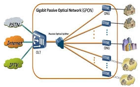
We deploy advanced GPON solutions for high-speed broadband delivery.
Ideal for ISPs, residential estates, and enterprise environments.
Supports voice, video, and data over a single fiber infrastructure.
Highly scalable and cost-effective for large deployments.
Reduces power and maintenance requirements significantly.
Our GPON systems ensure stable and reliable connectivity.
We install OLTs, ONTs, and splitters with precision.
Centralized management simplifies network operations.
Provides high bandwidth with minimal signal loss.
Perfect for FTTH and FTTB network architectures.
Future-ready technology for modern digital demands.
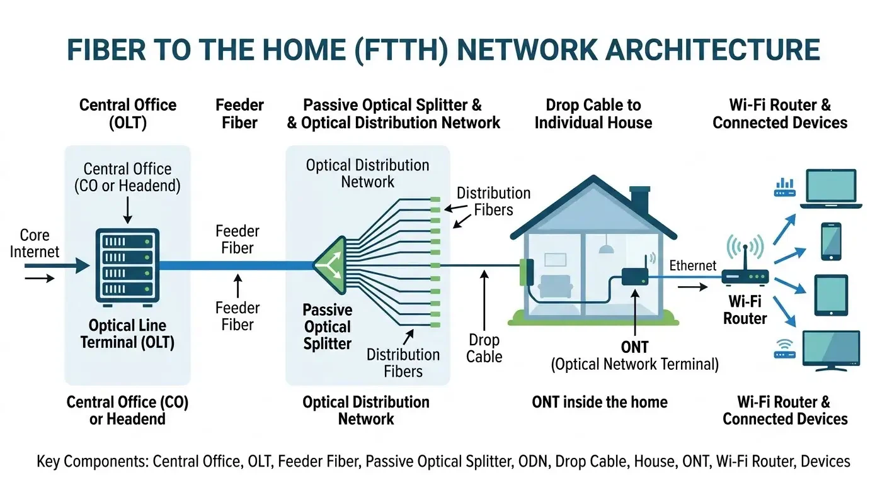
We implement FTTH solutions delivering fiber directly to end users.
Ensures ultra-fast internet speeds and reliable performance.
Ideal for residential communities and smart homes.
Supports high-definition streaming and smart applications.
Eliminates copper limitations with pure fiber connectivity.
We design and deploy complete FTTH infrastructure.
Includes splitters, distribution boxes, and home terminations.
Provides long-term scalability and low maintenance costs.
Improves user experience with consistent bandwidth.
Secure and interference-free communication system.
A key solution for modern digital living environments.
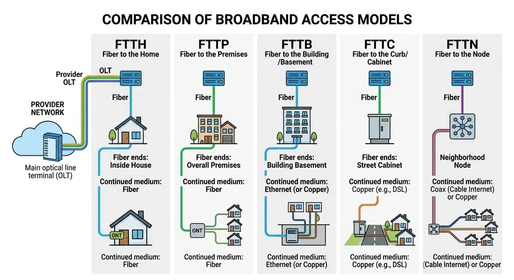
FTTB solutions deliver fiber connectivity to commercial buildings.
Ideal for offices, apartments, and business complexes.
Ensures high-speed connectivity within shared environments.
Reduces infrastructure costs compared to full FTTH.
Supports multiple users efficiently from a single fiber link.
We integrate fiber with internal LAN distribution systems.
Provides reliable backbone for enterprise networks.
Optimized for scalability and future expansion.
Reduces latency and improves performance.
Supports VoIP, CCTV, and enterprise applications.
Efficient solution for multi-tenant buildings.
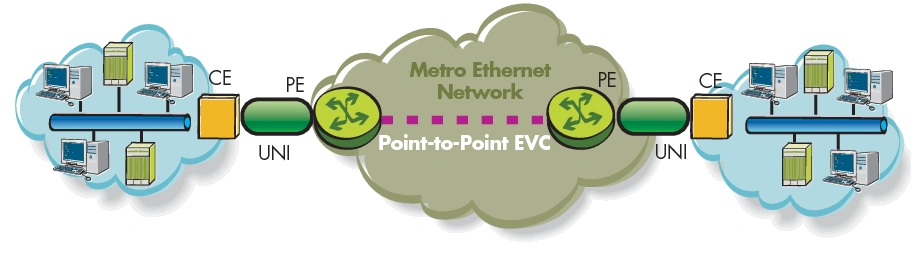
We deploy Metro Ethernet solutions for city-wide connectivity.
Connects multiple branches across large geographic areas.
Provides high-speed, secure, and scalable networking.
Ideal for enterprises, ISPs, and government institutions.
Supports large data transfers and mission-critical operations.
Enables seamless integration between different locations.
Offers low latency and high reliability.
Supports cloud services and centralized data systems.
Flexible bandwidth options for growing businesses.
Highly secure and easy to manage network infrastructure.
Perfect for modern enterprise connectivity needs.
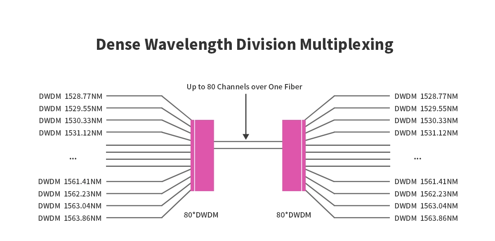
DWDM technology enables multiple data channels over a single fiber.
Maximizes fiber capacity without additional infrastructure.
Ideal for telecom providers and large-scale networks.
Supports long-distance, high-capacity data transmission.
Improves efficiency and reduces operational costs.
We deploy advanced DWDM systems with precise configuration.
Ensures optimal signal quality and minimal interference.
Supports high-speed backbone network expansion.
Scalable solution for increasing bandwidth demands.
Critical for data centers and carrier networks.
Future-proof technology for high-performance systems.
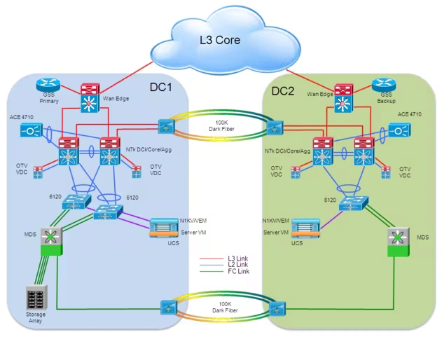
We deploy DCI solutions connecting multiple data centers.
Ensures high-speed and secure data transfer between sites.
Supports cloud computing and disaster recovery systems.
Minimizes latency and maximizes performance.
Ideal for enterprises with distributed infrastructure.
We design redundant and highly available connections.
Supports large-scale data replication and backup.
Enhances business continuity and resilience.
Secure and encrypted fiber communication channels.
Optimized for high bandwidth and low delay.
Essential for modern enterprise IT environments.
Boost your business performance with ultra-fast and reliable fiber connectivity.
Get Started